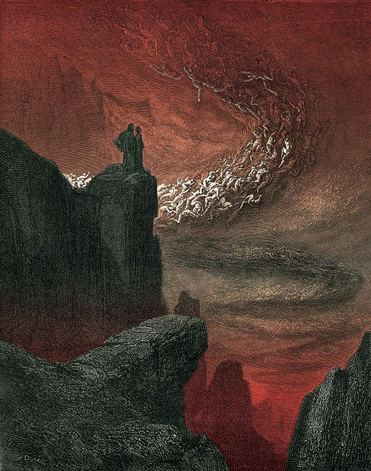

Dante scende nel secondo cerchio, dove il giudice infernale Minosse assegna le anime ai loro supplizi. Qui si trovano i Lussuriosi, travolti da una bufera incessante che simboleggia la passione. Dante incontra Paolo e Francesca, uccisi per il loro amore proibito. Il racconto di Francesca sulla nascita del loro sentimento e sulla tragica fine commuove profondamente il poeta che, sopraffatto dall'angoscia e dalla pietà, cade nuovamente svenuto.
Al risveglio, Dante si ritrova nel terzo cerchio tra i Golosi, immersi nel fango sotto una pioggia gelida e tormentati dal mostruoso cane Cerbero. Qui parla con il fiorentino Ciacco, che pronuncia la prima profezia sulle lotte civili tra Guelfi Bianchi e Neri e sul destino di Firenze. Prima di proseguire, Dante interroga Virgilio sulla condizione delle anime dopo il Giudizio Universale, apprendendo che la loro sofferenza diventerà ancora più acuta e perfetta.
